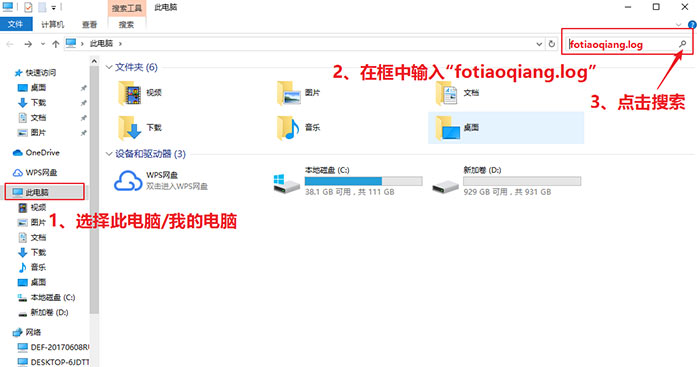
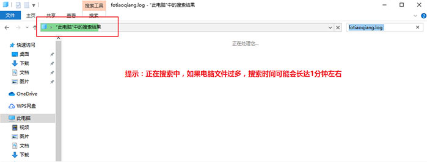
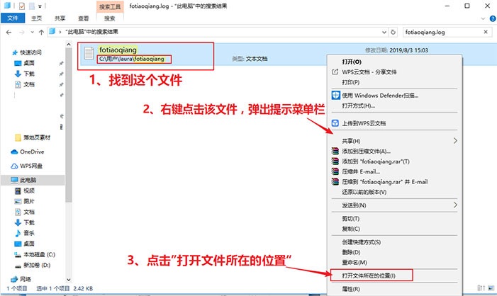
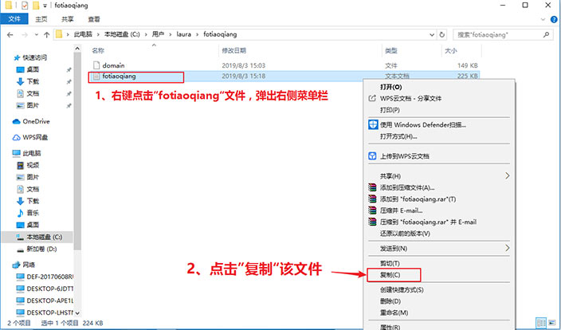
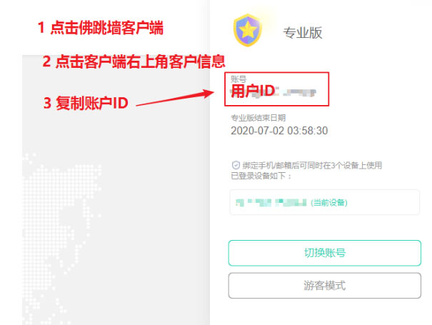

| 佛跳墙日志定位文件发送教程 |
| 1、在电脑上找到《我的电脑》双击打开（如下图） |
| 2、双击打开我的电脑后，如图在右上角输入《fotiaoqiang.log》点击搜索（如下图） |
|  |
| 3、点击搜索后，等待搜索结果（如下图） |
|  |
| 4、在搜索结果中，找到fotiaoqiang 这个文件，右键点击该文件后， 选择《打开文件所在位置》（如下图） |
|  |
| 5、在文件夹位置找到fotiaoqiang文档，右键点击该文件，选择“复制” |
|  |
| 6、把刚才复制的文件，黏贴到桌面 |
| 7、如下图，打开自己的佛跳墙客户端复制自己的ID信息 |
|  |
| 8、把“复制的ID”和“第6条中保存在桌面的fotiaoqiang文件” 发给客服 |